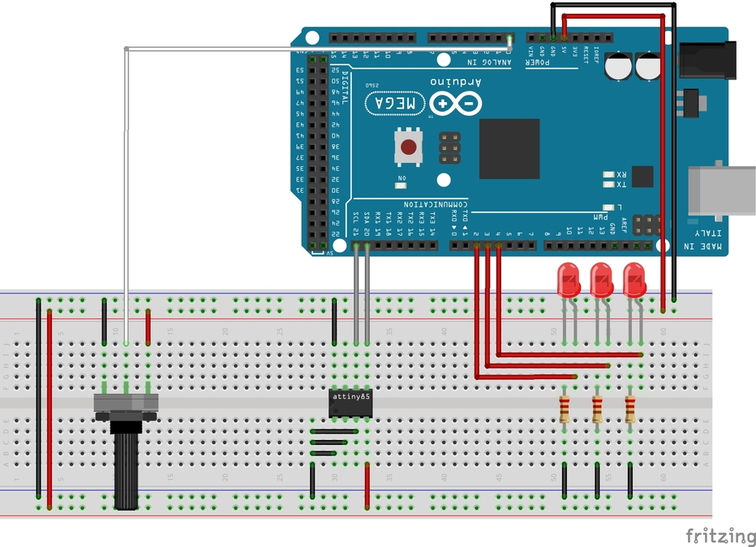

|  |
Arduino_Temperature v1
Arduino project that handles taking analog temperature, turning it digital and showing via LED if the temperature is too cold, exactly the temperature, or warmer than the user has indicated it should be. The user indicates this desired temperature via a turning knob.
|